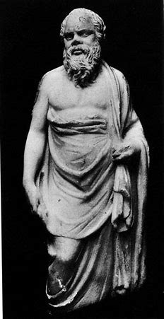
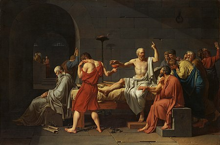

Сократ (на гръцки: Σωκράτης, Сократес) е древногръцки
философ, един от най-важните символи на западната философска традиция.
Чрез проучвания и задаване на въпроси той създава нов клон на философията,
която дотогава е ограничена от рамките на теориите за природата, отнасящи
се до морала и моралното образование. Този нов аспект на философската
наука се нарича етика (от гръцки: етос – характерното за отделния човек,
това, което го различава от другите и му придава индивидуални черти). За
Сократ моралното развитие е най-важната човешка задача. За него
философията не е само куп от учения и догми, а и начин на живот. Живеейки
според своите философски принципи, Сократ няма време да живее „за себе
си“, отказва да взема и пари за преподавателската си дейност.
Сократ е роден в Атина, в дома Алопеке. Баща му Софрониск е
скулптор, а майка му Фенарета – акушерка. Като млад Сократ има близки
отношения с философа Анаксагор, но философията му е повлияна от неговите
разбирания само дотолкова, доколкото Сократ не отчита влиянието на
боговете в човешкия живот, а смята, че човек е този, който прави живота
си. Сократ се занимава със скулптура в младостта си и е поканен от Фидий
да извае трите харити на Акропола, който по това време се изграждал
отново. Това е времето на впечатляващ културен, интелектуален и
политически подем на Атина, която изживява разцвета си под управлението на
Перикъл – велик стратег и радетел за развитието на полиса. Сократ живее с
чувството за принадлежност към Атина и атинския народ и прекарва живота си
в постоянен контакт с полиса и народа в него. Жени се за Ксантипа, за
която се говори, че е зла и проклета жена, но, имайки предвид факта, че
Сократ нито печели пари (той никога не взима пари за разговорите си), нито
допринася с нещо за благополучието на семейството си, е твърде възможно
Ксантипа често да е била сърдита и недоволна.
Формирането на точна представа за историческата личност Сократ и за неговите философски гледни точки е съвсем проблематично. Този проблем е познат като Сократовия проблем. Сократ не пише философски текстове. Знанието за личността, живота му и неговата философия се базира на това, което са писали неговите ученици и съвременници. Първи сред тях е Платон. Въпреки това творби от Ксенофонт, Аристотел и Аристофан също дават важни сведения. Трудността при откриването на истинския Сократ се корени в това, че тези текстове са философски или драматични творби, а не исторически мемоари. Като се изключи Тукидид (който не споменава нито Сократ, нито някои философи въобще) и Ксенофонт, де факто няма исторически записки на Сократовите съвременници, които да се отнасят за мястото и времето, където и когато е живял той. Изводът от всичко това е, че източниците, които споменават Сократ, незадължително твърдят, че са исторически достоверни и често са субективни (тези, които преследват и осъждат Сократ, не оставят писмени сведения). Поради тази причина историците са изправени пред предизвикателството да съгласуват тези разнообразни текстове от различни личности, така че да се създаде точно и последователно описание на Сократовия живот и работа. Резултатът от тези опити невинаги е реалистичен. Платон често е смятан за най-информативния източник за Сократовата биография и философия. В същото време обаче много учени смятат, че в някои свои творби Платон – литературен творец, хиперболизира своята, както се твърди, украсена версия за Сократ. Той едва ли е казвал или правил някои от нещата, които Платон му приписва. Счита се, че Ксенофонт, който е историк, е много по-надежден източник за личността на Сократ. Съвсем трудно и спорно е да се определи кога кой Сократ – реалният, или украсената версия, се използва в творбите на Платон Съвсем ясно обаче става от други писмени източници и исторически артефакти, че Сократ не е просто измислен герой на Платон. Информацията от Ксенофонт и Аристотел, заедно с някои от творбите на Аристофан (най-вече „Облаци“) могат да се използват за обрисуване на личността на Сократ извън Платоновите творби.
 Позицията на Сократ по време на диктаторския режим, въведен от тридесетте тирани, е двусмислена: той одобрява формата на управление, но осъжда вършените несправедливости и престъпления. След възстановяване на демократичното управление в Атина, срещу него е заведен политически процес, на който го обвиняват, че развращава младежта, като отрича официалните богове и въвежда нови. Близостта му с младите хора се тълкува като развращение, а неговата „безбожност“ се свежда до това, че следвал повелите на някакъв вътрешен свой глас, т.нар. „демон“ (daimonon), който по собствените му думи винаги го възпирал, когато е напът да сгреши.Самият Сократ винаги е твърдял, че този, който постъпва зле, не знае какво е добро, тоест ако човек знае какво е добро, той ще постъпва добре. Сократ не успява да докаже невинността си на скалъпения процес и бива осъден на смърт чрез отравяне с бучиниш. Приятелите му се опитват да го накарат да избяга в друг полис (при това те уреждат бягството му), но той отказва и остава твърдо на позицията си, че ако направи това, ще обезсмисли целия си живот (тогава е на 71 години), защото това би значело да се откаже от всичко, което е казвал и в което е вярвал като в безусловна истина.